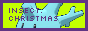
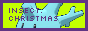

cool websites & fanlistings

see all the fanlistings i'm a part of, as well as any websites I consider useful or neat :)
websites are sorted by category below! I've used a lot of them myself to build this website.
mutuals & friends' sites :3
if i follow you and you follow me back, I'll most likely put you up here! if you want to be added or removed, just msg me!.png)


cool sites


 


fanlistings


")
")
")


resources & neat websites
⚠ = flash warning/eyestrain warning (on homepage)
Tutorials
-

- Into HTML - goes over everything you need to know about HTML as a language
- Absolute Beginner's Guide to Neocities
- Official Neocities Tutorial
- Petra's Tutorials - a lot of good resources!
Templates
- Sadgrl Online - templates, guides, and more useful info
- Repth's Themes - f2u themes/templates! my site uses a modified version of #12
- Foollovers - cool templates. site is in japanese!
- Almost Sweet
- Cepheus
- eggramen
- neothemes
- PetraPixel - simple template with a guide
- Kalechips
- Teppy's Layouts
- CreateBlog - old web templates
- tessisamess - mainly templates, but lots of other snippets and goodies too!
Graphics
- ⚠ Blinkie Collection - a collection of blinkies!
- ⚠ Blinkie Archive - same as above
- ⚠ 88x31 Gif Collection
- ⚠ A.N. Lucas' 88x31 Collection
- ⚠ Blinkies.cafe
- Glitter Graphics - 90's style glitter graphics & other gifs
- TextureTown - seamless patterns and textures for backgrounds
- fluffmoths id buttons - tiny identity buttons! i use these on my about page
- ⚠ Web Badges World - lots of badges
- Favicon - some cute favicons/tiny pixels
- GifCities - a search engine for thousands of archived gifs from GeoCities
- Coco's Pixel Safari - a collection of various types of graphics
- Pixel Glade - pixels, buttons, and more
- Bonnibel's Graphics - lots of pixels
- Pixel Heaven - various graphics
- 99GIF Shop - various old web style gifs
- Internet Bumper Stickers - what it says on the tin
- 8-BitSpider's Gallery - A DeviantArt gallery with lots of cool lil' pixels
- Gasara's Gallery - A DeviantArt gallery with lots of cool lil' pixels
- pinkukingdom - various cute graphics like blinkies n pixels
- Kiunlo's Cursor Cave
- sadthemes' pixels
- Cute Kawaii Resources
- Nationality Ribbons
- Pixel Ribbons - my ToyHouse folder of various ribbons for character profiles!
- buzzfly's image borders - i used one of these in my art gallery!
- Hekate's Background Archive
HTML/CSS/JS
- Neocities Hit Counter/ Last Updated - display how many hits your site has and when it was last updated. I use this in my footer.
-

- last.fm - shows your last listened to from last.fm. used on my home page
- DynamicDrive - lots of html & css effects
- RV's Effects - lots of html & JavaScript effects. I use the tinkerbell cursor trail code on my art gallery.
- Draggable Div - Snippet to create a div you can drag around
- Javascript Best Codes - Lots of cool javascript snippets
- Kallistero's Effect Customizer - cool effects for your website
- RSS How-To - useful guide for setting up an RSS feed
- HTML Journal - Journal template w/ auto-updating RSS
- CSS Shapes & Patterns
- CSS Background Patterns
- CSS Image effects
- Animate.css - easy to use css animations
- System.css - A design system for building retro apple-inspired interfaces
- Hover.css - css hover animations
Other Resource Websites
- Want to make a website? - lots of useful info for beginners
- the wetlands - various links to lots of different sites
- 32BitCafe's Resources - a very very large list of all categories listed here and more!
- 32BitCafe's Main Site
- Re:source ring
- ⚠ "Where the hell do I find any old web content?"
- Lost Letters
- macaque
- Ichigo Directory
- Your Creative Blog - lots of cool snippets and tutorials
Tools
- Backlink Checker - Check which websites link back to you
- Direct Linking iFrame Pages - useful since you can't bookmark iframe content! i use this :)
- Deploy to Neocities - i currently am too lazy to set this up and a tad confused but my site may use this in the future
- Git Tutorial - slightly different process, a guide similar to the above link, in an easier-to-follow format!
- WAVE Accessibility Evaluation - check how accessible your site is
- 3Dtext2GIF - create animated gifs with your own text! i used this on my about page
- 3D Gif Maker - create 3D gifs with your own images
-
UPNG - optimizes png file size so it doesn't use up a lot of that precious free 1GB!(lost link) - Yout - download youtube videos
- Error Box Creator - create old-style windows error messages
-
petpet generator -

Miscellaneous Cool Things!
- Browser Ponies - A version of Desktop Ponies for your website. Allows you to import your own characters too! See mine on my about page.
- A Soft Murmur - an online noise machine to use for focus or when you're not feeling great and need to calm down.
- You feel like shit - an interactive flowchart for when you feel like shit. meant to help with executive dysfunction.
- Purrli - cat purring in your browser!
- myNoise - relaxing soundscapes
- GUIdebook - a library of old GUIs
- What to Blog About When You Don’t Know What to Blog About
- MyAbandonware - a library of lots of old games!!
back to top